01
SAVR
A food decision assistant for everyday choice fatigue.
Research into food-choice fatigue shaped a supportive flow that narrows overwhelming options.
View case study ↗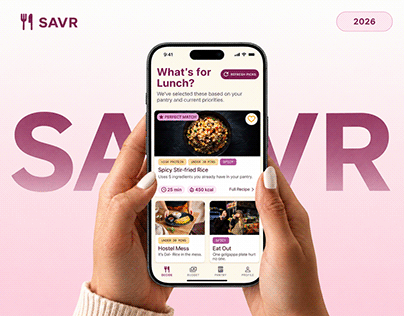
I’m a communication designer working across UI/UX, branding, and visual design. I like turning everyday problems into clear, useful experiences. I’m looking to learn and improve through design.
A food decision assistant for everyday choice fatigue.
Research into food-choice fatigue shaped a supportive flow that narrows overwhelming options.
View case study ↗
A blog-style guide to Aurangabad beyond tourist spots.
Local stories, lesser-known places and useful information create a more meaningful way to explore the city.
View case study ↗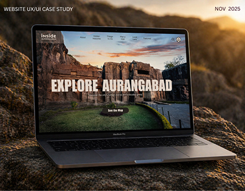
A contemporary pottery identity rooted in handmade clay.
The tactile character of handmade clay shaped a cohesive identity and packaging system.
View case study ↗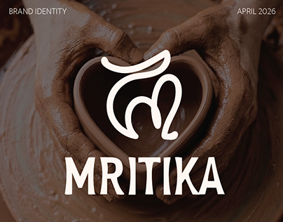
A field-led study of Yemmiganur weaving traditions.
Field visits, artisan interviews and visual documentation connected the craft to its people and context.
View project ↗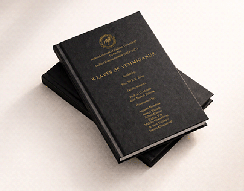
A student magazine with a shared editorial direction.
As Managing Editor, I led the visual direction, editorial layouts and design coordination.
View project ↗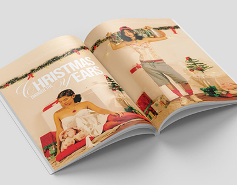
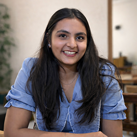
I’m a final-year Communication Design student at NIFT Hyderabad, working across UI/UX and visual design.
I’m curious about the small details in everyday life, how people interact with things, what feels intuitive, and where an experience could be clearer. I enjoy observing, asking questions, and turning what I discover into thoughtful design.
My work spans research, interfaces, identity, packaging, and editorial design, depending on what the idea calls for. Whatever the medium, I aim to create work that feels purposeful, considered, and visually engaging.
I’m currently seeking a four-month Graduation Project Internship in UX/UI Design beginning in December 2026 or January 2027.
Select a category to see the skills and tools I use across my projects.
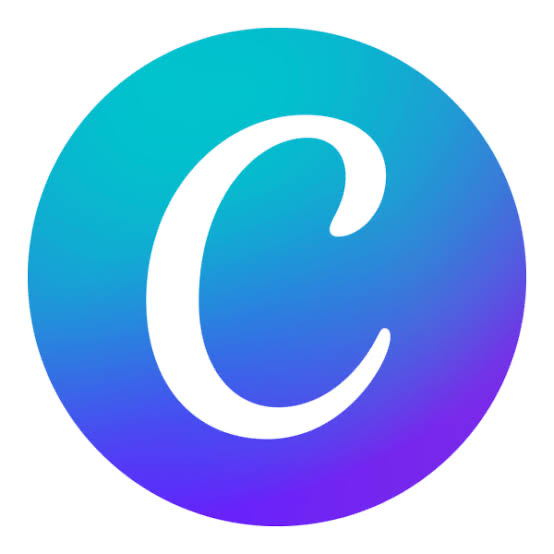
Canva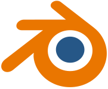
Blender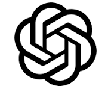
ChatGPT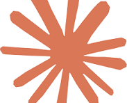
Claude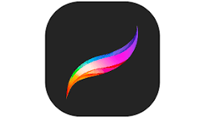
ProcreateA little more about me and a few things you might want to know.
She is exploring how AI-assisted tools and rapid prototyping can support the design process while keeping human insight and thoughtful decision-making at its centre.
She especially enjoys making sense of research, identifying patterns and translating those insights into a clear structure that can guide the final experience.
Travel, discovering new places, cooking and baking, exploring art across different mediums and trying unfamiliar experiences.
She is seeking a four-month Graduation Project Internship in UX/UI Design beginning in December 2026 or January 2027. Most importantly, she hopes to join a team where she can learn through real projects, thoughtful mentorship, collaboration and constructive feedback while contributing meaningfully along the way.
Have a project, opportunity or idea?